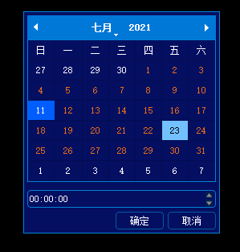
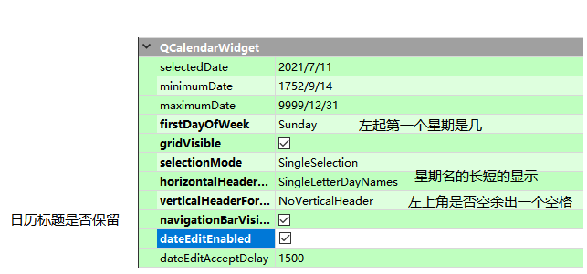
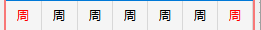

成品展示

完整代码参考 custom-calendar
回顾过程
此次制作的日历控件功能单一,只是向外界返回一个年月日 时分秒的日期,但是仅就日历控件本身的样式调试而言,对我来说是非常复杂的,它是一个复合控件,下面我列举一下在制作过程中遇到的问题。
1. 日历中每个子控件的名称不知道,这就导致无法在qss上设置样式
2. 日历中日期文字的设置不是简单的设置qss即可实现,比如周一 周二 周三。。。。周日 要显示为 一 二 三 四 五。。 日,还有当月的日期要设置为其他颜色用来区分等等,这些都需要使用代码和设置控件的属性实现,所以还需要多了解一下日历控件。
问题解决
不知道复杂控件中的子控件可以参考这篇笔记,【本地链接】输出控件内部对象层级
还有一些日历的重要属性总结


出现上面这种情况,需要在代码中写
setLocale(QLocale::Chinese);
下面是日历中日期格子中文字颜色的配置
//这里将周六和周日对应的日期文字颜色设置的和周一相同,这样周一到周日对应的日期颜色就都是相同的了
QTextCharFormat tcf = ui->DateCalendar->weekdayTextFormat(Qt::Monday);
ui->DateCalendar->setWeekdayTextFormat(Qt::Sunday, tcf);
ui->DateCalendar->setWeekdayTextFormat(Qt::Saturday, tcf);
//修改当前月所有日期的文字颜色,用以区别其他月份日期
QDate tdate = ui->DateCalendar->selectedDate(); //获取当前日历被选择的日期
m_iyear = tdate.year(); //重新赋值所选日期的年份
m_imonth= tdate.month(); //重新赋值所选日期的月份
QTextCharFormat selectFormat;
selectFormat.setForeground(m_CurrentDaysTextColor);
SetMonthDaysColor(m_iyear, m_imonth, selectFormat);
//修改系统当天日期的背景颜色
tdate = QDate::currentDate();
QTextCharFormat todayFormat;
todayFormat.setBackground(m_CurrentDayBackColor);
ui->DateCalendar->setDateTextFormat(tdate,todayFormat);
日历样式表总结
涵盖了日历控件中大部分子控件的设置
/************************日历样式*************************
说明: 此日历控件由三部分组成包括 原生日历控件 时间选择框 按钮
当你看到属性后面由 CHANGE 字样时表面此属性的值需要根据皮肤来改变
********************************************************/
#mainwindow #dlgcalendarradiobox /*日历控件整体 mainwindow是它的父窗体控件*/
{
background-color:#040F61; /*CHANGE*/
border: 1px solid #0082D5; /*CHANGE*/
max-width: 243px;
min-width: 243px;
max-height: 274px;
min-height: 274px;
}
#dlgcalendarradiobox QTableView /*原生日历控件的表格设置,主要针对每个日期格的设置*/
{
color:#FFFFFF; /* 日期文字颜色 CHANGE */
selection-background-color: #73C0FE; /* 星期几 周几 的文字颜色 CHANGE */
alternate-background-color: #040F61; /* 星期几 周几 的背景颜色 CHANGE*/
background-color: #040F61; /* 日期背景颜色 CHANGE */
border: 1px solid #0082D5; /*CHANGE*/
max-width: 233px;
min-width: 233px;
max-height: 175px;
min-height: 175px;
}
/*日历控件顶部的水平标题控件*/
#qt_calendar_navigationbar
{
background-color: #0078D7; /*CHANGE*/
max-height: 30px;
min-height: 30px;
}
/*月选择框 选择月份的按钮和下滑出的菜单 在日历的标题栏上*/
#qt_calendar_monthbutton QMenu
{
color: #FFFFFF;
font: 12px "Microsoft YaHei";
background-color: #040F61; /*菜单背景颜色 CHANGE*/
selection-background-color: #0B539F;/*菜单选项被覆盖时的颜色 CHANGE*/
}
/*月选择框 文字颜色*/
#qt_calendar_monthbutton
{
color: #FFFFFF;
}
/*年编辑框 在日历的标题栏上*/
#qt_calendar_yearedit
{
background-color: #0078D7; /*CHANGE*/
color: #FFFFFF;
font: 10px "Microsoft YaHei";
selection-background-color:#0B539F; /*CHANGE*/
}
/*年份显示框 文字颜色*/
#qt_calendar_yearbutton
{
color: #FFFFFF;
}
/*日历控件中的按钮 确定 取消按钮*/
#dlgcalendarradiobox QPushButton
{
background-color: #040F61; /*CHANGE*/
color:#FFFFFF;
border:1px solid #025A9E; /*CHANGE*/
border-radius:4px;
max-width: 58px;
min-width: 58px;
max-height: 20px;
min-height: 20px;
}
#dlgcalendarradiobox QPushButton:checked
{
background-color:#d3d8e2; /*CHANGE*/
}
#dlgcalendarradiobox QPushButton:hover
{
background-color:#d3d8e2; /*CHANGE*/
}
/*按钮 : 向前一个月*/
#qt_calendar_prevmonth
{
qproperty-icon:url("./premonth.png"); /*CHANGE*/
}
/*按钮 : 向后一个月*/
#qt_calendar_nextmonth
{
qproperty-icon:url("./nextmonth.png"); /*CHANGE*/
}
/*按钮 : 年编辑框向上的箭头*/
#qt_calendar_yearedit::up-arrow{
image: url("./preyear.png"); /*CHANGE*/
}
/*按钮 : 年编辑框向下的箭头*/
#qt_calendar_yearedit::down-arrow{
image: url("./nextyear.png"); /*CHANGE*/
}
/*时分秒 时间选择框*/
#dlgcalendarradiobox QTimeEdit
{
max-height: 20px;
min-height: 20px;
border:1px solid #0082D5; /*CHANGE*/
border-radius: 4px;
background-color: #040F61; /*CHANGE*/
color:#FFFFFF;
}
/*时分秒 时间选择框 上箭头*/
#dlgcalendarradiobox QTimeEdit::up-button
{
background-color: transparent;
border:none;
image: url("./up.png"); /*CHANGE*/
}
/*时分秒 时间选择框上箭头 点击*/
#dlgcalendarradiobox QTimeEdit::up-button:pressed
{
background-color: transparent;
border:1px;
image: url("./up.png"); /*CHANGE*/
}
/*时分秒 时间选择框下箭头*/
#dlgcalendarradiobox QTimeEdit::down-button
{
background-color: transparent;
border:none;
image: url("./down.png"); /*CHANGE*/
}
/*时分秒 时间选择框下箭头 点击*/
#dlgcalendarradiobox QTimeEdit::down-button:pressed
{
background-color: transparent;
border:1px;
image: url("./down.png"); /*CHANGE*/
}